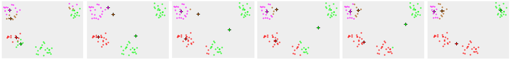
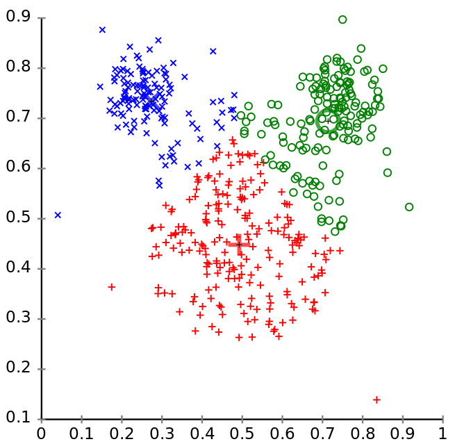
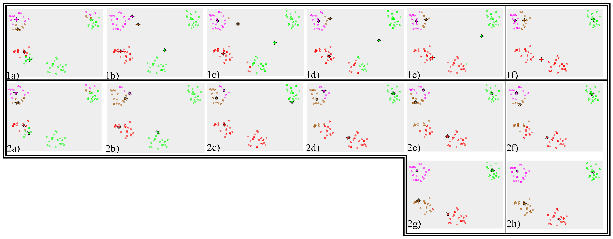
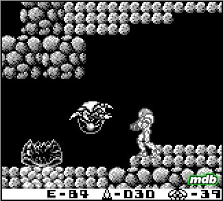

name: inverse layout: true class: left, top, inverse --- # Clustering --- ## Types of Models + Classifiers + Regressions + *Clustering* + Outlier ??? ## Details + Classifiers + describes and distinguishes cases. Yelp may want to find a category for a business based on the reviews and business description + Regressions + Predict a continuous value. Eg. predict a home's selling price given sq footage, # of bedrooms + Clustering + find "natural" groups of data *without labels* + Outlier + find anomalous transactions, eg. finding fraud for credit cards --- ## Clustering + Group together similar items + Separate dissimilar items + Automatically discover groups without providing labels ??? ## Perspectives + Similar items: again, metrics of similarity critical in defining these groups + Marking boundaries between different classes + Type of groups unknown before hand. Out of many attributes, what tend to be shared? --- ## Machine Learning + Supervised + Unsupervised + Semi-supervised + Active ??? ## Definitions + Supervised + Given data with a label, predict data without a label + Unsupervised + Given data without labels, group "similar" items together + Semi-supervised + Mix of the above: e.g., unsupervised to find groups, supervised to label and distinguish borderline cases + Active + Starting with unlabeled data, select the most helpful cases for a human to label --- ## Clustering Applications + Gain insight into how data is distributed + Preprocessing step to bootstrap labeling + Discover outliers ??? ## Apps + Closest we have to "magic box": put structured data in, see what groups may exist + You want labeled data, but where to start? How many classes? What to name them? + Cluster data, investigate examples. + Hand label exemplary cases + Choose names that distinguish groups + Run classifier on labeled data, compare with clustering, examine errors, repeat --- ## Yelp Examples + User groups based on usage, reviewing habits, feature adoption + Businesses: when should a new category be created, what should it be called? + Reviews: for a particular business, are there common themes. Show better variety? ??? ## Examples + User groups may be trend spotters, "lurkers", travelers, early adopters + Do we need a New American and American category? How similar are these categories? + Does a reviewer need to read 10 reviews about great food, so-so service? Maybe providing different view points helps give a better picture --- ## Intuition + Intuition => Mathematical Expression => Solution => Evaluation + High intra-class similarity + Low inter-class similarity + Interpretable ??? ## Good Clusters + Just like all data mining, needs to be used to take action + Can't take action if you don't understand the results + Trade-offs: testing shows it works, but you don't understand it --- ## Methods + Partitioning + Construct ```k``` groups, evaluate fitness, improve groups + Hierarchical + Agglomerate items into groups, creating "bottom-up" clusters; or divide set into ever smaller groups, creating "top-down" clusters + Density + Find groups by examining continuous density within a potential group + Grid + Chunk space into units, cluster units instead of individual records ??? ## Algorithms + Partitioning + Method similar to gradient descent: find some grouping, evaluate it, improve it somehow, repeat. k-means. + Hierarchical + Build groups 1 "join" at a time, examining distance between two things that can be joined together, if close, combine groups. Reverse: divisive. + Density + Many of the above methods just look for distance. This method tries to find groups that might be strung out, but maintain a density. Think about an asteroid belt. It is one group, but not clustered together in a way you typically think. + Grid + Can speed up clustering and provide similar results --- ## k-means + Start: Randomly pick =k= centers for clusters + Repeat: + Assign all other points to their closest cluster + Recalculate the center of the cluster ??? ## Iterative + Start at a random point, find step in right direction, take step, re-evaluate --- ## Example <img src="img/kmeansclustering.jpg"/> ??? ## Process + We pick some nodes at random, mark with a cross + Find other points that are closest to the crosses + Find new *centroid* based on the average of all points + Start again + img: http://apandre.wordpress.com/visible-data/cluster-analysis/ --- ## Distance + *Centroid* is the average of all points in a cluster; the center + Different distance metrics for real numbers + But how to find "average" of binary or nominal data? ??? ## You Can't + k-means is used for numerical data --- ## Normalization + Cluster cities by average temperature and population attributes + <x,y> = <temp, pop> + Using Euclidean distance, which attribute will affect similarity more? ??? ## Un-normalized + Population: it is a much bigger number, will contribute much more to distance + Artificially inflating importance just because units are different --- ## Normalization Techniques + Z-score + ```(v - mean) / stddev``` + Min-max + ```(v - min) / (max - min)``` + Decimal + ```* 10``` ```/ 10``` + Square + ```x**2``` + Log + ```log(x)``` ??? ## Useful for? + Z-score + 1-pass normalization, retaining information about stdev + Min-max + keep within expected range, usually [0-1] + Decimal + easy to apply + Square + keep inputs positive + Log + de-emphasize differences between large numbers --- ## Local Optima  ??? ## No Guarantee + Since there are many possible stable centers, we may not end up at the best one + How can we improve our odds of finding a good separation? + Why did we end up here? starting points + Choose different starting points + Compare results + Other problems? Mouse --- ## Uneven Groups  ??? ## k-means + k-means is good for similarly sized groups, or at least groups that are similar distance between other members + Other problems that would pull the centroid away from the real groups? + Outliers + img: http://en.wikipedia.org/wiki/K-means_clustering --- ## Medoids + Instead of finding a *centroid* find a *medoid* + Medoid: actual data point that represents median of the cluster + PAM: Partitioning Around Medoids ??? ## Trade-offs + PAM more expensive to evaluate + Scales poorly, since we need to evaluate many more medoids with many more points --- ## Example  ??? ## Stability + No stability between real clusters + Outliers can't pull centroid far out of actual cluster + img: http://en.wikipedia.org/wiki/K-medoids --- # *Break*  + Do not confuse Medoid with Metroid ??? ## Note + img: http://stealthboy.com/~msherman/metroid.html